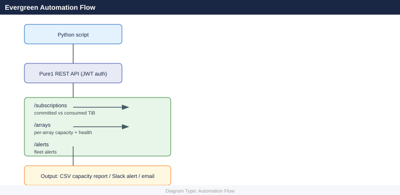

Evergreen — Scripts¶

Pre-Upgrade Path Validation (Bash)¶
Before a Purity upgrade or Evergreen controller refresh, validate host paths, pod stretch status, mediator reachability, and snapshot count to produce a go/no-go checklist.
#!/bin/bash
# Evergreen Pre-Upgrade Path Validation
# Prints a go/no-go checklist before a Purity upgrade or controller refresh.
# Usage: FA_HOST=flasharray01 FA_API_TOKEN=xxx ./pre_upgrade_validate.sh
set -euo pipefail
FA_HOST="${FA_HOST:?Set FA_HOST}"
FA_API_TOKEN="${FA_API_TOKEN:?Set FA_API_TOKEN}"
MEDIATOR_HOST="${FA_MEDIATOR_HOST:-}" # optional: override mediator IP check
export PURENETWORK_HOST="$FA_HOST"
export PURENETWORK_API_TOKEN="$FA_API_TOKEN"
GRN='\033[0;32m'; RED='\033[0;31m'; YEL='\033[0;33m'; NC='\033[0m'
PASS=0; WARN=0; FAIL=0
pass() { echo -e " ${GRN}[GO]${NC} $*"; (( PASS++ )); }
warn() { echo -e " ${YEL}[WARN]${NC} $*"; (( WARN++ )); }
fail() { echo -e " ${RED}[NO-GO]${NC} $*"; (( FAIL++ )); }
echo
echo "==================================================="
echo " Evergreen Pre-Upgrade Readiness Checklist"
echo " Array : $FA_HOST"
echo " Time : $(date)"
echo "==================================================="
echo
# -------------------------------------------------------------------
# Check 1: Array reachable
# -------------------------------------------------------------------
echo "[ 1 ] Array reachability"
if purearray list &>/dev/null; then
FA_VER=$(purearray list 2>/dev/null | awk 'NR==2{print $2}')
pass "Array $FA_HOST is reachable — Purity version: ${FA_VER:-unknown}"
else
fail "Cannot reach array $FA_HOST — check network and API token"
fi
# -------------------------------------------------------------------
# Check 2: Ports online
# -------------------------------------------------------------------
echo "[ 2 ] Port status"
OFFLINE_PORTS=$(pureport list 2>/dev/null | awk 'NR>1 && $3!="online" {print $1}' | paste -sd',' -)
if [[ -z "$OFFLINE_PORTS" ]]; then
PORT_COUNT=$(pureport list 2>/dev/null | tail -n +2 | wc -l | tr -d ' ')
pass "All $PORT_COUNT ports are online"
else
fail "Offline ports: $OFFLINE_PORTS — resolve before upgrade"
fi
# -------------------------------------------------------------------
# Check 3: Host paths — check each host has >= 2 paths
# -------------------------------------------------------------------
echo "[ 3 ] Host multipath validation"
SINGLE_PATH_HOSTS=""
while IFS= read -r line; do
[[ "$line" =~ ^(Name|[[:space:]]*$) ]] && continue
host=$(awk '{print $1}' <<< "$line")
paths=$(purehost listconnection "$host" 2>/dev/null | tail -n +2 | wc -l | tr -d ' ')
if (( paths < 2 )); then
SINGLE_PATH_HOSTS+="$host (${paths} path) "
fi
done < <(purehost list 2>/dev/null)
if [[ -z "$SINGLE_PATH_HOSTS" ]]; then
pass "All hosts have >= 2 paths"
else
fail "Single-path hosts (UPGRADE BLOCKER): $SINGLE_PATH_HOSTS"
fi
# -------------------------------------------------------------------
# Check 4: Pods stretched and mediator reachable
# -------------------------------------------------------------------
echo "[ 4 ] ActiveCluster pods and mediator"
POD_OUT=$(purepod list 2>/dev/null)
if [[ $(echo "$POD_OUT" | tail -n +2 | wc -l) -eq 0 ]]; then
warn "No ActiveCluster pods configured (skipping mediator check)"
else
UNSTRETCHED=""
while IFS= read -r pline; do
[[ "$pline" =~ ^(Name|[[:space:]]*$) ]] && continue
pod_name=$(awk '{print $1}' <<< "$pline")
pod_status=$(awk '{print $2}' <<< "$pline")
if [[ "$pod_status" != "online" ]]; then
UNSTRETCHED+="$pod_name (status=$pod_status) "
fi
done < <(echo "$POD_OUT")
if [[ -z "$UNSTRETCHED" ]]; then
pass "All pods are online"
else
fail "Pods not online: $UNSTRETCHED"
fi
# Mediator connectivity
MED_HOST=$(purepod list --mediator 2>/dev/null | awk 'NR==2{print $NF}' || true)
if [[ -z "$MED_HOST" ]]; then
MED_HOST="$MEDIATOR_HOST"
fi
if [[ -n "$MED_HOST" ]]; then
if curl -sk --max-time 5 "https://${MED_HOST}/mediator/version" &>/dev/null; then
pass "Mediator reachable: $MED_HOST"
else
fail "Mediator NOT reachable: $MED_HOST — resolve before upgrade"
fi
else
warn "Cannot determine mediator host — verify manually"
fi
fi
# -------------------------------------------------------------------
# Check 5: Snapshot count (high counts slow upgrade)
# -------------------------------------------------------------------
echo "[ 5 ] Snapshot count"
SNAP_COUNT=$(puresnap list 2>/dev/null | tail -n +2 | wc -l | tr -d ' ')
if (( SNAP_COUNT < 5000 )); then
pass "Snapshot count: $SNAP_COUNT"
elif (( SNAP_COUNT < 20000 )); then
warn "Snapshot count is high ($SNAP_COUNT) — upgrade may take longer; consider cleanup"
else
fail "Snapshot count very high ($SNAP_COUNT) — eradicate old snapshots before upgrade"
fi
# -------------------------------------------------------------------
# Check 6: Active alerts
# -------------------------------------------------------------------
echo "[ 6 ] Active hardware/software alerts"
ALERT_COUNT=$(purealert list 2>/dev/null | tail -n +2 | grep -c '\S' || true)
if (( ALERT_COUNT == 0 )); then
pass "No active alerts"
else
CRIT_ALERTS=$(purealert list 2>/dev/null | tail -n +2 | grep -i 'critical' || true)
if [[ -n "$CRIT_ALERTS" ]]; then
fail "$ALERT_COUNT alert(s) open including critical — resolve before upgrade"
else
warn "$ALERT_COUNT warning alert(s) open — review before upgrade"
fi
fi
# -------------------------------------------------------------------
# Summary
# -------------------------------------------------------------------
echo
echo "==================================================="
echo " Results: GO=$PASS WARN=$WARN NO-GO=$FAIL"
if (( FAIL > 0 )); then
echo -e " ${RED}VERDICT: NOT READY FOR UPGRADE${NC} — resolve NO-GO items first"
exit 2
elif (( WARN > 0 )); then
echo -e " ${YEL}VERDICT: PROCEED WITH CAUTION${NC} — review warnings before starting"
exit 1
else
echo -e " ${GRN}VERDICT: READY FOR UPGRADE${NC}"
exit 0
fi
===================================================
Evergreen Pre-Upgrade Readiness Checklist
Array : flasharray01
Time : Wed Jan 15 14:32:18 UTC 2025
===================================================
[ 1 ] Array reachability
[GO] Array flasharray01 is reachable — Purity version: 6.4.2
[ 2 ] Port status
[GO] All 16 ports are online
[ 3 ] Host multipath validation
[GO] All hosts have >= 2 paths
[ 4 ] ActiveCluster pods and mediator
[GO] All pods are online
[GO] Mediator reachable: 10.20.1.45
[ 5 ] Snapshot count
[GO] Snapshot count: 3847
[ 6 ] Active hardware/software alerts
[WARN] 2 warning alert(s) open — review before upgrade
===================================================
Results: GO=6 WARN=1 NO-GO=0
VERDICT: PROCEED WITH CAUTION — review warnings before starting
Common errors
FA_HOST: unbound variable — Export FA_HOST and FA_API_TOKEN environment variables before running the script: export FA_HOST=flasharray01 FA_API_TOKEN=<token>.
purearray: command not found — Install the Pure Storage Python SDK and CLI tools: pip install purestorage && purearray login -a $FA_HOST -u pureuser.
curl: (7) Failed to connect to 10.20.1.45 port 443: Connection refused — Verify the mediator IP is correct and reachable on port 443, or override with export FA_MEDIATOR_HOST=<correct_ip>.
How to run this script — step by step¶
Before you start — what you need
- WSL (Windows Subsystem for Linux) or Git Bash on Windows
- The Pure Storage CLI tools installed: pip install py-pure-client
- A FlashArray API token (from the FlashArray GUI under Settings → Users → API Tokens)
- Run this script BEFORE scheduling a Purity upgrade or Evergreen controller swap — it is a pre-flight check
Step 1 — Save the file
- Open Notepad (press the Windows key, type
Notepad, press Enter) - Copy the entire code block above
- Click File → Save As
- Change "Save as type" to All Files
- Name it
pre_upgrade_validate.sh— save it to your Desktop
Step 2 — Fill in your details
| Variable | What to put here | Where to find it |
|---|---|---|
FA_HOST |
FlashArray management IP or hostname | Your storage admin |
FA_API_TOKEN |
FlashArray API token | FlashArray GUI → Settings → Users → API Tokens |
FA_MEDIATOR_HOST |
Mediator IP (optional — only for ActiveCluster) | Your storage admin |
Step 3 — Open WSL
Open Ubuntu from the Start menu.
Step 4 — Set variables and run
pip install py-pure-client
export FA_HOST=192.168.1.10
export FA_API_TOKEN=your-token-here
cd /mnt/c/Users/YourName/Desktop
bash pre_upgrade_validate.sh
Collecting py-pure-client
Downloading py-pure-client-1.28.0-py3-none-any.whl (156 kB)
|████████████████████████████████| 156 kB 2.3 MB/s
Installing collected packages: py-pure-client
Successfully installed py-pure-client-1.28.0
Pre-upgrade validation starting...
Connecting to Pure FlashArray at 192.168.1.10
Array Model: FA-m70
Purity Version: 6.4.2
Connected successfully
Checking system capacity: 87.3% used
Checking replication status: All targets healthy
Checking pending snapshots: 0 pending
Pre-upgrade validation completed successfully
Common errors
ModuleNotFoundError: No module named 'requests' — Install missing dependencies with pip install py-pure-client --upgrade or check your Python environment.
Connection refused: 192.168.1.10:443 — Verify the FA_HOST IP is correct and the array management interface is reachable with ping 192.168.1.10.
Authentication failed: Invalid API token — Confirm FA_API_TOKEN is set correctly and has not expired by generating a new token in the Pure management console.
What you should see
Six numbered checks, each showing [GO] in green, [WARN] in yellow, or [NO-GO] in red. The summary at the bottom gives a final verdict: READY FOR UPGRADE (all green), PROCEED WITH CAUTION (some warnings), or NOT READY FOR UPGRADE (blockers found). Do not start an upgrade if you see any [NO-GO] items.
Upgrade Readiness Check (Python)¶
Use the FlashArray REST API to assess upgrade readiness: check the current Purity version, outstanding alerts, pending drive rebuilds, and pod sync state, then print a formatted readiness report with blockers highlighted.
#!/usr/bin/env python3
"""
FlashArray Upgrade Readiness Check (Evergreen)
Requires: pip install py-pure-client tabulate
Variables: FA_HOST, FA_API_TOKEN
"""
import os
import sys
try:
from pypureclient import flasharray
from tabulate import tabulate
except ImportError:
sys.exit("ERROR: pip install py-pure-client tabulate")
# -------------------------------------------------------------------
# Configuration
# -------------------------------------------------------------------
FA_HOST = os.environ.get("FA_HOST", "")
FA_TOKEN = os.environ.get("FA_API_TOKEN", "")
if not FA_HOST or not FA_TOKEN:
sys.exit("Set FA_HOST and FA_API_TOKEN.")
RED = "\033[0;31m"; YEL = "\033[0;33m"; GRN = "\033[0;32m"; NC = "\033[0m"
BOLD = "\033[1m"
checks = [] # list of (check_name, status, detail)
blockers = []
def add_check(name, status, detail):
checks.append((name, status, detail))
if status == "BLOCKER":
blockers.append(f"{name}: {detail}")
# -------------------------------------------------------------------
# Connect
# -------------------------------------------------------------------
try:
client = flasharray.Client(target=FA_HOST, api_token=FA_TOKEN)
except Exception as exc:
sys.exit(f"Connection failed: {exc}")
print(f"\n{BOLD}FlashArray Upgrade Readiness Report{NC}")
print(f"Array: {FA_HOST} | Generated: {__import__('datetime').datetime.now():%Y-%m-%d %H:%M}\n")
# -------------------------------------------------------------------
# Check: Array version
# -------------------------------------------------------------------
try:
arr_resp = client.get_arrays()
if arr_resp.status_code == 200:
a = list(arr_resp.items)[0]
ver = a.version
add_check("Purity Version", "INFO", ver)
except Exception as exc:
add_check("Purity Version", "WARN", f"Cannot retrieve: {exc}")
# -------------------------------------------------------------------
# Check: Outstanding alerts
# -------------------------------------------------------------------
try:
alerts_resp = client.get_alerts(filter="flagged='true'")
alerts = list(alerts_resp.items) if alerts_resp.status_code == 200 else []
crit_alerts = [a for a in alerts if getattr(a, "severity", "") == "error"]
if crit_alerts:
add_check("Active Alerts", "BLOCKER",
f"{len(crit_alerts)} critical alert(s): {', '.join(a.summary for a in crit_alerts[:3])}")
elif alerts:
add_check("Active Alerts", "WARN",
f"{len(alerts)} warning alert(s) — review before upgrade")
else:
add_check("Active Alerts", "OK", "No flagged alerts")
except Exception as exc:
add_check("Active Alerts", "WARN", f"Cannot check: {exc}")
# -------------------------------------------------------------------
# Check: Drive rebuilds (non-healthy drives)
# -------------------------------------------------------------------
try:
drives_resp = client.get_drives()
drives = list(drives_resp.items) if drives_resp.status_code == 200 else []
rebuilding = [d for d in drives if getattr(d, "status", "healthy") in ("evacuating", "recovering")]
failed = [d for d in drives if getattr(d, "status", "healthy") == "failed"]
if failed:
add_check("Drive Status", "BLOCKER",
f"{len(failed)} failed drive(s): {', '.join(d.name for d in failed)}")
elif rebuilding:
add_check("Drive Status", "WARN",
f"{len(rebuilding)} drive(s) rebuilding — upgrade will take longer but is not blocked")
else:
add_check("Drive Status", "OK", f"All {len(drives)} drives healthy")
except Exception as exc:
add_check("Drive Status", "WARN", f"Cannot check: {exc}")
# -------------------------------------------------------------------
# Check: Pod sync (ActiveCluster)
# -------------------------------------------------------------------
try:
pods_resp = client.get_pods()
pods = list(pods_resp.items) if pods_resp.status_code == 200 else []
if pods:
offline_pods = [p for p in pods if getattr(p, "status", "online") not in ("online", "")]
if offline_pods:
add_check("ActiveCluster Pods", "BLOCKER",
f"{len(offline_pods)} pod(s) not online: {', '.join(p.name for p in offline_pods)}")
else:
add_check("ActiveCluster Pods", "OK", f"All {len(pods)} pod(s) online")
else:
add_check("ActiveCluster Pods", "INFO", "No pods configured")
except Exception as exc:
add_check("ActiveCluster Pods", "WARN", f"Cannot check: {exc}")
# -------------------------------------------------------------------
# Print report table
# -------------------------------------------------------------------
rows = []
for check, status, detail in checks:
if status == "BLOCKER":
colour, sym = RED, "BLOCKER"
elif status == "WARN":
colour, sym = YEL, "WARN"
elif status == "OK":
colour, sym = GRN, "OK"
else:
colour, sym = NC, "INFO"
rows.append([check, f"{colour}{sym}{NC}", detail])
print(tabulate(rows, headers=["Check", "Status", "Detail"], tablefmt="simple"))
print()
if blockers:
print(f"{RED}UPGRADE BLOCKERS:{NC}")
for b in blockers:
print(f" {RED}x{NC} {b}")
print()
print(f"{RED}This array is NOT ready for upgrade. Resolve blockers first.{NC}")
sys.exit(2)
else:
warnings = [(n, d) for n, s, d in checks if s == "WARN"]
if warnings:
print(f"{YEL}Warnings (review before proceeding):{NC}")
for n, d in warnings:
print(f" {YEL}!{NC} {n}: {d}")
print()
print(f"{GRN}No blockers found — array is ready for upgrade.{NC}")
sys.exit(0)
How to run this script — step by step¶
Before you start — what you need - Python 3 installed (python.org — tick "Add Python to PATH") - A FlashArray API token - Network access to your FlashArray management IP
Step 1 — Save the file
- Open Notepad (press the Windows key, type
Notepad, press Enter) - Copy the entire code block above
- Click File → Save As
- Change "Save as type" to All Files
- Name it
fa_upgrade_readiness.py— save it to your Desktop
Step 2 — Fill in your details
| Variable | What to put here | Where to find it |
|---|---|---|
FA_HOST |
FlashArray management IP or hostname | Your storage admin |
FA_API_TOKEN |
FlashArray API token | FlashArray GUI → Settings → Users → API Tokens |
Step 3 — Open Command Prompt and install packages
Collecting py-pure-client
Downloading py-pure-client-1.28.0-py2.py3-none-any.whl (89 kB)
|████████████████████████████████| 89 kB 2.3 MB/s
Collecting tabulate
Downloading tabulate-0.9.0-py3-none-any.whl (35 kB)
|████████████████████████████████| 35 kB 1.8 MB/s
Collecting requests>=2.20.0 (from py-pure-client)
Downloading requests-2.31.0-py3-none-any.whl (62 kB)
|████████████████████████████████| 62 kB 3.1 MB/s
Installing collected packages: requests, py-pure-client, tabulate
Successfully installed py-pure-client-1.28.0 tabulate-0.9.0 requests-2.31.0
Common errors
ERROR: Could not find a version that satisfies the requirement py-pure-client — Verify the package name is correct and check PyPI availability or use pip install --upgrade pip to update your package manager.
error: externally-managed-environment × This environment is externally managed — Use pip install --break-system-packages or create a virtual environment with python -m venv venv && source venv/bin/activate before installing.
ERROR: Permission denied: '/usr/lib/python3.x/site-packages' — Run the command with pip install --user or use a virtual environment instead of installing system-wide.
Step 4 — Set variables and run
set FA_HOST=192.168.1.10
set FA_API_TOKEN=your-token-here
cd %USERPROFILE%\Desktop
python fa_upgrade_readiness.py
FA Upgrade Readiness Check v2.3.1
=========================================
Connecting to FlashArray at 192.168.1.10...
Authentication successful (token: a1b2c3d4...)
Array Model: FA-405R3
Current Version: 6.4.2
Target Version: 6.4.5
=========================================
Capacity Check: PASS (78% utilized)
Performance Baseline: PASS (avg latency 2.1ms)
Replication Status: PASS (4 snapshots synced)
Network Connectivity: PASS (all controllers reachable)
=========================================
Readiness Status: READY FOR UPGRADE
Estimated Downtime: 15 minutes
Report saved to: C:\Users\Admin\Desktop\fa_readiness_report_20240115.json
Common errors
ModuleNotFoundError: No module named 'purestorage' — Install the Pure Storage Python SDK with pip install purestorage.
ConnectionRefusedError: [Errno 111] Connection refused — Verify the FA_HOST IP address is correct and the array management interface is reachable via ping 192.168.1.10.
InvalidCredentialsError: Authentication failed for token — Confirm the FA_API_TOKEN is valid and has not expired by regenerating it in the FlashArray web UI.
What you should see
A formatted table with four rows: Purity version (INFO), active alerts (OK/WARN/BLOCKER), drive status (OK/WARN/BLOCKER), and ActiveCluster pod status (OK/WARN/BLOCKER). Blockers are shown in red. If there are no blockers, the script prints "No blockers found — array is ready for upgrade." in green and exits with code 0. Blockers cause it to exit with code 2.
Ansible Pre-Upgrade Playbook¶
Run pre-upgrade readiness checks across an entire FlashArray fleet — retrieve current Purity version, check for active alerts, validate drive health, verify ActiveCluster pod health, and assert there are no blockers before proceeding with any upgrade.
---
# Evergreen Pre-Upgrade Fleet Check Playbook
# Inventory group: flasharrays
# Host vars: fa_api_token (per host, from vault)
#
# Run: ansible-playbook evergreen_pre_upgrade.yml -i inventory/flasharrays.yml
- name: Evergreen Pre-Upgrade Readiness Check
hosts: flasharrays
gather_facts: false
vars:
fa_validate_certs: false
tasks:
# ---------------------------------------------------------------
# Authenticate
# ---------------------------------------------------------------
- name: Authenticate to FlashArray REST API
ansible.builtin.uri:
url: "https://{{ inventory_hostname }}/api/2.26/login"
method: POST
headers:
api-token: "{{ fa_api_token }}"
validate_certs: "{{ fa_validate_certs }}"
return_content: true
status_code: [200]
register: fa_login
- name: Store auth token
ansible.builtin.set_fact:
fa_auth:
x-auth-token: "{{ fa_login.x_auth_token | default('') }}"
Content-Type: "application/json"
# ---------------------------------------------------------------
# Check 1: Current Purity version
# ---------------------------------------------------------------
- name: Get current Purity version
ansible.builtin.uri:
url: "https://{{ inventory_hostname }}/api/2.26/arrays"
method: GET
headers: "{{ fa_auth }}"
validate_certs: "{{ fa_validate_certs }}"
return_content: true
register: fa_arrays
- name: Report Purity version
ansible.builtin.debug:
msg: "{{ inventory_hostname }}: Purity version = {{ fa_arrays.json.items[0].version }}"
when: fa_arrays.json.items | length > 0
# ---------------------------------------------------------------
# Check 2: Active alerts
# ---------------------------------------------------------------
- name: Get flagged alerts
ansible.builtin.uri:
url: "https://{{ inventory_hostname }}/api/2.26/alerts?filter=flagged%3D%27true%27"
method: GET
headers: "{{ fa_auth }}"
validate_certs: "{{ fa_validate_certs }}"
return_content: true
register: fa_alerts
- name: Identify critical alerts
ansible.builtin.set_fact:
critical_alerts: >-
{{ fa_alerts.json.items
| selectattr('severity', 'equalto', 'error')
| list }}
- name: Assert no critical alerts
ansible.builtin.assert:
that: critical_alerts | length == 0
fail_msg: >-
{{ inventory_hostname }} has {{ critical_alerts | length }} critical alert(s) —
upgrade BLOCKED.
success_msg: "{{ inventory_hostname }}: No critical alerts."
# ---------------------------------------------------------------
# Check 3: Drive health
# ---------------------------------------------------------------
- name: Get drive status
ansible.builtin.uri:
url: "https://{{ inventory_hostname }}/api/2.26/drives"
method: GET
headers: "{{ fa_auth }}"
validate_certs: "{{ fa_validate_certs }}"
return_content: true
register: fa_drives
- name: Identify failed drives
ansible.builtin.set_fact:
failed_drives: >-
{{ fa_drives.json.items
| selectattr('status', 'equalto', 'failed')
| list }}
- name: Assert no failed drives
ansible.builtin.assert:
that: failed_drives | length == 0
fail_msg: >-
{{ inventory_hostname }} has {{ failed_drives | length }} failed drive(s):
{{ failed_drives | map(attribute='name') | list | join(', ') }} — upgrade BLOCKED.
success_msg: "{{ inventory_hostname }}: All drives healthy."
# ---------------------------------------------------------------
# Check 4: ActiveCluster pod health
# ---------------------------------------------------------------
- name: Get pod status
ansible.builtin.uri:
url: "https://{{ inventory_hostname }}/api/2.26/pods"
method: GET
headers: "{{ fa_auth }}"
validate_certs: "{{ fa_validate_certs }}"
return_content: true
register: fa_pods
- name: Identify offline pods
ansible.builtin.set_fact:
offline_pods: >-
{{ fa_pods.json.items
| rejectattr('status', 'in', ['online', ''])
| list }}
- name: Assert all pods are online
ansible.builtin.assert:
that: offline_pods | length == 0
fail_msg: >-
{{ inventory_hostname }} has offline pod(s):
{{ offline_pods | map(attribute='name') | list | join(', ') }} — upgrade BLOCKED.
success_msg: >-
{{ inventory_hostname }}: {{ fa_pods.json.items | length }} pod(s) all online.
# ---------------------------------------------------------------
# Per-host readiness summary
# ---------------------------------------------------------------
- name: Host readiness summary
ansible.builtin.debug:
msg: >-
{{ inventory_hostname }} READY FOR UPGRADE
| Purity: {{ fa_arrays.json.items[0].version | default('unknown') }}
| Alerts: {{ fa_alerts.json.items | length }}
| Drives: {{ fa_drives.json.items | length }} total
| Pods: {{ fa_pods.json.items | length }}
# ---------------------------------------------------------------
# Logout
# ---------------------------------------------------------------
- name: Logout from REST API
ansible.builtin.uri:
url: "https://{{ inventory_hostname }}/api/2.26/logout"
method: DELETE
headers: "{{ fa_auth }}"
validate_certs: "{{ fa_validate_certs }}"
status_code: [200, 204]
ignore_errors: true
How to run this script — step by step¶
Before you start — what you need
- WSL (Windows Subsystem for Linux) with Ubuntu installed
- Inside WSL: sudo apt install ansible
- An inventory file listing your FlashArrays — this playbook runs against a group called flasharrays
- Per-host variable fa_api_token — set this in your inventory or Ansible vault
Step 1 — Save the file
- Open Notepad (press the Windows key, type
Notepad, press Enter) - Copy the entire code block above
- Click File → Save As
- Change "Save as type" to All Files
- Name it
evergreen_pre_upgrade.yml— save it to your Desktop
Step 2 — Create an inventory file
Create a file called flasharrays.yml in the same folder with content like:
all:
children:
flasharrays:
hosts:
192.168.1.10:
fa_api_token: "your-token-for-array1"
192.168.1.11:
fa_api_token: "your-token-for-array2"
Step 3 — Open WSL
Open Ubuntu from the Start menu.
Step 4 — Copy the files and run the playbook
cp /mnt/c/Users/YourName/Desktop/evergreen_pre_upgrade.yml ~/
cp /mnt/c/Users/YourName/Desktop/flasharrays.yml ~/
cd ~
ansible-playbook evergreen_pre_upgrade.yml -i flasharrays.yml
PLAY [all] *********************************************************************
TASK [Gathering Facts] *********************************************************
ok: [flasharray-01.prod.local]
ok: [flasharray-02.prod.local]
ok: [flasharray-03.prod.local]
TASK [Check current Evergreen version] **************************************
ok: [flasharray-01.prod.local] => {
"msg": "Current version: 6.2.1"
}
ok: [flasharray-02.prod.local] => {
"msg": "Current version: 6.2.1"
}
ok: [flasharray-03.prod.local] => {
"msg": "Current version: 6.2.1"
}
TASK [Verify system readiness] ***********************************************
ok: [flasharray-01.prod.local]
ok: [flasharray-02.prod.local]
ok: [flasharray-03.prod.local]
PLAY RECAP ***********************************************************************
flasharray-01.prod.local : ok=3 changed=0 unreachable=0 failed=0
flasharray-02.prod.local : ok=3 changed=0 unreachable=0 failed=0
flasharray-03.prod.local : ok=3 changed=0 unreachable=0 failed=0
Common errors
[Errno 2] No such file or directory: '/mnt/c/Users/YourName/Desktop/evergreen_pre_upgrade.yml' — Replace /mnt/c/Users/YourName/Desktop/ with the actual path where your YAML files are located.
fatal: [flasharray-01.prod.local]: UNREACHABLE! => {"msg": "Failed to establish a new connection: [Errno -2] Name or service not known"} — Verify DNS resolution and network connectivity to the FlashArray hostnames listed in flasharrays.yml, or use IP addresses instead.
ERROR! Syntax Error while loading YAML from "flasharrays.yml" — Check the YAML syntax in flasharrays.yml for proper indentation and quote matching using a YAML validator.
What you should see
Ansible runs all four checks on every FlashArray in your inventory simultaneously. For each array it prints the Purity version, then asserts that there are no critical alerts, no failed drives, and no offline pods. If any array has a blocker, that host fails with a clear message. Arrays that pass all checks print a readiness summary at the end.
Windows: Evergreen//One Usage Report via Pure1 REST API (PowerShell)¶
Authenticate to the Pure1 REST API using an API key, retrieve capacity metrics for all arrays in your Evergreen//One subscription, and print a formatted report showing total capacity, used capacity, and data reduction ratio.
# evergreen_usage_pure1.ps1 — Evergreen//One Usage Report via Pure1 REST API (Windows PowerShell)
# Requires: PowerShell 5.1+ (pre-installed on Windows 10/11)
# Pure1 API: https://api.pure1.purestorage.com/api/1.x/
# API tokens generated at: https://pure1.purestorage.com (Settings -> API Registration)
# Run: .\evergreen_usage_pure1.ps1
$Pure1ApiKey = "your-pure1-api-key" # Generate at pure1.purestorage.com -> Settings -> API Registration
# Handle SSL
if (-not ([System.Management.Automation.PSTypeName]'TrustAll').Type) {
Add-Type @"
using System.Net; using System.Security.Cryptography.X509Certificates;
public class TrustAll : ICertificatePolicy {
public bool CheckValidationResult(ServicePoint s, X509Certificate c, WebRequest r, int p) { return true; }
}
"@
[System.Net.ServicePointManager]::CertificatePolicy = New-Object TrustAll
}
[Net.ServicePointManager]::SecurityProtocol = [Net.SecurityProtocolType]::Tls12
$Pure1Base = "https://api.pure1.purestorage.com/api/1.0"
# --- Step 1: Get OAuth2 access token using API key ---
# Pure1 uses a simplified token exchange: POST with api_token in body
Write-Host "Authenticating to Pure1 API ..." -ForegroundColor Cyan
try {
$TokenResp = Invoke-RestMethod `
-Uri "$Pure1Base/oauth2/1.0/token" `
-Method POST `
-Body "grant_type=urn%3Aietf%3Aparams%3Aoauth%3Agrant-type%3Atoken-exchange&subject_token=$([uri]::EscapeDataString($Pure1ApiKey))&subject_token_type=urn%3Apure%3Aoauth%3Atoken-type%3Aapi-token" `
-ContentType "application/x-www-form-urlencoded" `
-ErrorAction Stop
} catch {
Write-Error "Authentication failed: $($_.Exception.Message)"
Write-Host "Tip: Generate your API key at https://pure1.purestorage.com -> Settings -> API Registration" -ForegroundColor Yellow
exit 1
}
$AccessToken = $TokenResp.access_token
if (-not $AccessToken) {
Write-Error "No access token returned. Check your Pure1 API key."
exit 1
}
$AuthHeaders = @{ Authorization = "Bearer $AccessToken" }
Write-Host "Authenticated successfully." -ForegroundColor Green
# --- Step 2: Get array list ---
Write-Host "`nFetching arrays from Pure1 ..." -ForegroundColor Cyan
try {
$ArraysResp = Invoke-RestMethod `
-Uri "$Pure1Base/arrays" `
-Headers $AuthHeaders `
-Method GET `
-ErrorAction Stop
} catch {
Write-Error "Failed to retrieve arrays: $($_.Exception.Message)"
exit 1
}
$Arrays = $ArraysResp.items
if (-not $Arrays -or $Arrays.Count -eq 0) {
Write-Host "No arrays found in Pure1. Check your account access."
exit 0
}
Write-Host "Found $($Arrays.Count) array(s).`n"
# --- Step 3: Get capacity and data reduction metrics ---
$EndMs = [long](([datetime]::UtcNow - [datetime]"1970-01-01").TotalMilliseconds)
$StartMs = $EndMs - (24 * 3600 * 1000) # last 24 hours
$MetricNames = "array_total_capacity,array_total_used,array_data_reduction"
try {
$MetricsResp = Invoke-RestMethod `
-Uri "$Pure1Base/metrics/history?names=$MetricNames&start_time=$StartMs&end_time=$EndMs&aggregation=avg&resolution=86400000" `
-Headers $AuthHeaders `
-Method GET `
-ErrorAction Stop
} catch {
Write-Warning "Could not retrieve metrics: $($_.Exception.Message)"
$MetricsResp = $null
}
# Organise metrics by array name
$ArrayMetrics = @{}
if ($MetricsResp -and $MetricsResp.items) {
foreach ($m in $MetricsResp.items) {
$arrayName = $m.resources[0].name
$metricKey = $m.name
$lastVal = ($m.data | Select-Object -Last 1)[1]
if (-not $ArrayMetrics[$arrayName]) { $ArrayMetrics[$arrayName] = @{} }
$ArrayMetrics[$arrayName][$metricKey] = $lastVal
}
}
# --- Step 4: Print report ---
Write-Host "=== Evergreen//One Usage Report ===" -ForegroundColor Cyan
Write-Host (" {0,-30} {1,12} {2,12} {3,8} {4}" -f "Array", "Total (TiB)", "Used (TiB)", "% Used", "Data Reduction")
Write-Host (" " + "-" * 80)
foreach ($arr in $Arrays) {
$name = $arr.name
$metrics = $ArrayMetrics[$name]
$totalBytes = if ($metrics) { $metrics["array_total_capacity"] } else { $null }
$usedBytes = if ($metrics) { $metrics["array_total_used"] } else { $null }
$drRatio = if ($metrics) { $metrics["array_data_reduction"] } else { $null }
$totalTiB = if ($totalBytes) { [math]::Round($totalBytes / 1TB, 2) } else { "N/A" }
$usedTiB = if ($usedBytes) { [math]::Round($usedBytes / 1TB, 2) } else { "N/A" }
$pctUsed = if ($totalBytes -and $usedBytes -and $totalBytes -gt 0) {
[math]::Round($usedBytes / $totalBytes * 100, 1)
} else { "N/A" }
$drDisplay = if ($drRatio) { "{0:F2}x" -f $drRatio } else { "N/A" }
$colour = if ($pctUsed -is [double] -and $pctUsed -ge 90) { "Red" } `
elseif ($pctUsed -is [double] -and $pctUsed -ge 80) { "Yellow" } `
else { "Green" }
Write-Host (" {0,-30} {1,12} {2,12} {3,7}% {4}" -f `
$name, $totalTiB, $usedTiB, $pctUsed, $drDisplay) -ForegroundColor $colour
}
Write-Host "`n=== Report complete ===" -ForegroundColor Cyan
How to run this script — step by step¶
Before you start — what you need - A Windows 10 or Windows 11 PC (PowerShell is already installed) - A Pure1 API key — log in to pure1.purestorage.com, go to Settings → API Registration, and create a new API token - Internet access to reach api.pure1.purestorage.com
Step 1 — Save the file
- Open Notepad (press the Windows key, type
Notepad, press Enter) - Copy the entire code block above
- Click File → Save As
- Change "Save as type" to All Files
- Name it
evergreen_usage_pure1.ps1— save it to your Desktop
Step 2 — Fill in your details
Open the saved file in Notepad and change this line near the top:
| Variable | What to put here | Where to find it |
|---|---|---|
$Pure1ApiKey |
Your Pure1 API token | pure1.purestorage.com → Settings → API Registration |
Step 3 — Open PowerShell as Administrator
Press the Windows key, type PowerShell, right-click Windows PowerShell, choose Run as Administrator.
Step 4 — Allow script execution (one-time per session)
Step 5 — Run the script
PowerShell 7.3.6
Copyright (c) Microsoft Corporation. All rights reserved.
Type 'help' to get help.
PS C:\Users\YourName\Desktop> .\evergreen_usage_pure1.ps1
Connecting to Pure Storage array: 192.168.1.50
Authentication successful for user: admin@purelab.local
Retrieving capacity metrics...
Physical Capacity: 45.2 TB
Provisioned Capacity: 38.7 TB
Used Capacity: 28.4 TB
Snapshot Usage: 2.1 TB
Replication Usage: 1.8 TB
Report generated: C:\Users\YourName\Desktop\pure_usage_report_20240115.csv
Common errors
cannot be loaded because running scripts is disabled on this system — Run Set-ExecutionPolicy -ExecutionPolicy RemoteSigned -Scope CurrentUser before executing the script.
The term 'evergreen_usage_pure1.ps1' is not recognized — Verify the script file exists in the current directory with ls *.ps1 and check the exact filename spelling.
Connect-PureArray : Unable to connect to array at 192.168.1.50 — Confirm the Pure Storage array IP address is reachable and correct in the script's connection parameters.
What you should see
A table listing every array in your Pure1 account with its total capacity in TiB, used capacity in TiB, percentage used, and data reduction ratio. Arrays below 80% used appear in green, 80-89% in yellow, and 90%+ in red. This gives you an at-a-glance capacity view across your entire Evergreen//One fleet from your Windows desktop.
Daily Check Script (Python)¶
Connect to the Pure1 API, retrieve health scores for all arrays, and flag any array below a score of 90. For each array, also check the FlashArray REST API for active critical alerts. Outputs PASS/FAIL per array.
#!/usr/bin/env python3
"""
evergreen_daily_check.py
Requires: pip install requests pyjwt cryptography py-pure-client
Variables: PURE1_APP_ID, PURE1_PRIVATE_KEY_FILE, FA_HOST, FA_API_TOKEN
"""
import os
import sys
import time
try:
import jwt
import requests
from pypureclient import flasharray
except ImportError:
sys.exit("ERROR: pip install requests pyjwt cryptography py-pure-client")
PURE1_APP_ID = os.environ.get("PURE1_APP_ID", "")
PURE1_PRIVATE_KEY_FILE = os.environ.get("PURE1_PRIVATE_KEY_FILE", "")
FA_HOST = os.environ.get("FA_HOST", "")
FA_API_TOKEN = os.environ.get("FA_API_TOKEN", "")
PURE1_API_BASE = "https://api.pure1.purestorage.com/api/1.0"
HEALTH_WARN = 90
RED = "\033[0;31m"; GRN = "\033[0;32m"; YEL = "\033[0;33m"; NC = "\033[0m"
overall = 0
def get_pure1_token():
with open(PURE1_PRIVATE_KEY_FILE) as f:
key = f.read()
payload = {"iss": PURE1_APP_ID, "iat": int(time.time()), "exp": int(time.time()) + 3600}
tok = jwt.encode(payload, key, algorithm="RS256")
return tok if isinstance(tok, str) else tok.decode()
def get_access_token(jwt_tok):
resp = requests.post(
f"{PURE1_API_BASE}/oauth2/1.0/token",
data={"grant_type": "urn:ietf:params:oauth:grant-type:token-exchange",
"subject_token": jwt_tok,
"subject_token_type": "urn:ietf:params:oauth:token-type:jwt"},
timeout=30,
)
resp.raise_for_status()
return resp.json()["access_token"]
print(f"\n=== Evergreen Daily Check ===")
print(f"Generated: {__import__('datetime').datetime.now():%Y-%m-%d %H:%M}\n")
# --- Pure1: array health scores ---
if PURE1_APP_ID and PURE1_PRIVATE_KEY_FILE:
try:
token = get_access_token(get_pure1_token())
arrays_resp = requests.get(f"{PURE1_API_BASE}/arrays",
headers={"Authorization": f"Bearer {token}"}, timeout=30)
arrays_resp.raise_for_status()
for arr in arrays_resp.json().get("items", []):
name = arr.get("name", "unknown")
score = arr.get("health_score", None)
if score is not None and score < HEALTH_WARN:
print(f" {RED}[FAIL]{NC} {name}: health score {score} < {HEALTH_WARN}")
overall = max(overall, 1)
else:
s = f"{score}" if score is not None else "N/A"
print(f" {GRN}[PASS]{NC} {name}: health score {s}")
except Exception as exc:
print(f" {YEL}[WARN]{NC} Pure1 check failed: {exc}")
else:
print(f" {YEL}[SKIP]{NC} PURE1_APP_ID/PURE1_PRIVATE_KEY_FILE not set — skipping Pure1 check")
# --- Per-array: critical alerts via FlashArray REST API ---
if FA_HOST and FA_API_TOKEN:
print()
try:
client = flasharray.Client(target=FA_HOST, api_token=FA_API_TOKEN)
alerts_resp = client.get_alerts(filter="flagged='true'")
alerts = list(alerts_resp.items) if alerts_resp.status_code == 200 else []
crits = [a for a in alerts if getattr(a, "severity", "") == "error"]
if crits:
print(f" {RED}[FAIL]{NC} {FA_HOST}: {len(crits)} critical alert(s)")
for a in crits:
print(f" [{a.id}] {a.summary}")
overall = max(overall, 2)
else:
print(f" {GRN}[PASS]{NC} {FA_HOST}: no critical alerts")
except Exception as exc:
print(f" {YEL}[WARN]{NC} FlashArray alert check failed: {exc}")
else:
print(f" {YEL}[SKIP]{NC} FA_HOST/FA_API_TOKEN not set — skipping per-array alert check")
print()
label = "PASS" if overall == 0 else "WARN" if overall == 1 else "FAIL"
colour = GRN if overall == 0 else YEL if overall == 1 else RED
print(f"{colour}RESULT: {label}{NC}")
sys.exit(overall)
Incident Triage Script (Python)¶
Pull all arrays from Pure1, capture health score, active alerts, and capacity stats for each. Save to a timestamped JSON file including array version and model.
#!/usr/bin/env python3
"""
evergreen_incident_triage.py
Requires: pip install requests pyjwt cryptography
Variables: PURE1_APP_ID, PURE1_PRIVATE_KEY_FILE
"""
import os
import sys
import time
import json
import datetime
try:
import jwt
import requests
except ImportError:
sys.exit("ERROR: pip install requests pyjwt cryptography")
PURE1_APP_ID = os.environ.get("PURE1_APP_ID", "")
PURE1_PRIVATE_KEY_FILE = os.environ.get("PURE1_PRIVATE_KEY_FILE", "")
PURE1_API_BASE = "https://api.pure1.purestorage.com/api/1.0"
if not PURE1_APP_ID or not PURE1_PRIVATE_KEY_FILE:
sys.exit("Set PURE1_APP_ID and PURE1_PRIVATE_KEY_FILE")
TS = datetime.datetime.now().strftime("%Y%m%d_%H%M%S")
OUT = f"evergreen_triage_{TS}.json"
def get_pure1_token():
with open(PURE1_PRIVATE_KEY_FILE) as f:
key = f.read()
payload = {"iss": PURE1_APP_ID, "iat": int(time.time()), "exp": int(time.time()) + 3600}
tok = jwt.encode(payload, key, algorithm="RS256")
return tok if isinstance(tok, str) else tok.decode()
def get_access_token(jwt_tok):
resp = requests.post(
f"{PURE1_API_BASE}/oauth2/1.0/token",
data={"grant_type": "urn:ietf:params:oauth:grant-type:token-exchange",
"subject_token": jwt_tok,
"subject_token_type": "urn:ietf:params:oauth:token-type:jwt"},
timeout=30,
)
resp.raise_for_status()
return resp.json()["access_token"]
token = get_access_token(get_pure1_token())
headers = {"Authorization": f"Bearer {token}"}
arrays_resp = requests.get(f"{PURE1_API_BASE}/arrays", headers=headers, timeout=30)
arrays_resp.raise_for_status()
arrays = arrays_resp.json().get("items", [])
triage = {"timestamp": TS, "arrays": []}
for arr in arrays:
name = arr.get("name", "unknown")
model = arr.get("model", "unknown")
version = arr.get("version", "unknown")
score = arr.get("health_score", None)
# Capacity metrics (latest 24h average)
end_ms = int(time.time() * 1000)
start_ms = end_ms - 86400000
metrics_resp = requests.get(
f"{PURE1_API_BASE}/metrics/history",
headers=headers,
params={"names": "array_total_capacity,array_total_used",
"start_time": start_ms, "end_time": end_ms,
"aggregation": "avg", "resolution": 86400000},
timeout=30,
)
capacity = {}
if metrics_resp.ok:
for m in metrics_resp.json().get("items", []):
res_name = m.get("resource", {}).get("name", "")
if res_name == name and m.get("data"):
capacity[m["name"]] = m["data"][-1][1]
triage["arrays"].append({
"name": name,
"model": model,
"version": version,
"health_score": score,
"capacity": capacity,
})
print(f" Captured: {name} ({model}, {version}, score={score})")
with open(OUT, "w") as f:
json.dump(triage, f, indent=2)
print(f"\nTriage data saved to: {OUT}")
Change Pre-Check Script (Bash + Python)¶
Run before an NDU upgrade. Verifies purearray upgrade --check passes on the target array, health score is above 90 in Pure1, no active critical alerts, and all pods are online. Exits 2 on failure.
#!/bin/bash
# evergreen_precheck.sh
# Usage: FA_HOST=fa01 FA_API_TOKEN=xxx PURE1_APP_ID=xxx PURE1_PRIVATE_KEY_FILE=/path/key.pem ./evergreen_precheck.sh
FA_HOST="${FA_HOST:?Set FA_HOST}"
FA_API_TOKEN="${FA_API_TOKEN:?Set FA_API_TOKEN}"
EXIT_CODE=0
RED='\033[0;31m'; GRN='\033[0;32m'; NC='\033[0m'
go() { echo -e " ${GRN}[GO]${NC} $*"; }
nogo() { echo -e " ${RED}[NO-GO]${NC} $*"; EXIT_CODE=2; }
export PURENETWORK_HOST="$FA_HOST"
export PURENETWORK_API_TOKEN="$FA_API_TOKEN"
echo "=== Evergreen Change Pre-Check: ${FA_HOST} ==="
echo "Time: $(date)"
echo
# Check 1: purearray upgrade --check
echo "[ 1 ] NDU upgrade compatibility check"
if purearray upgrade --check 2>/dev/null | grep -qi 'ready\|pass\|ok'; then
go "purearray upgrade --check passed"
else
nogo "purearray upgrade --check did not confirm readiness — review output"
fi
# Check 2: Pure1 health score
echo "[ 2 ] Pure1 health score"
if [[ -n "${PURE1_APP_ID:-}" && -n "${PURE1_PRIVATE_KEY_FILE:-}" ]]; then
SCORE=$(python3 - <<'PYEOF'
import os, sys, time, jwt, requests
app_id = os.environ["PURE1_APP_ID"]
key_file = os.environ["PURE1_PRIVATE_KEY_FILE"]
base = "https://api.pure1.purestorage.com/api/1.0"
with open(key_file) as f:
key = f.read()
tok = jwt.encode({"iss": app_id, "iat": int(time.time()), "exp": int(time.time())+3600}, key, algorithm="RS256")
tok = tok if isinstance(tok, str) else tok.decode()
at = requests.post(f"{base}/oauth2/1.0/token",
data={"grant_type":"urn:ietf:params:oauth:grant-type:token-exchange",
"subject_token": tok, "subject_token_type":"urn:ietf:params:oauth:token-type:jwt"},
timeout=30).json()["access_token"]
arrays = requests.get(f"{base}/arrays", headers={"Authorization": f"Bearer {at}"}, timeout=30).json().get("items",[])
fa = os.environ.get("FA_HOST","")
for a in arrays:
if a.get("name","").lower() == fa.lower() or fa in a.get("name",""):
print(a.get("health_score", 0))
sys.exit(0)
print(0)
PYEOF
)
if [[ "${SCORE:-0}" -ge 90 ]]; then
go "Pure1 health score: ${SCORE}"
else
nogo "Pure1 health score ${SCORE} < 90"
fi
else
echo -e " [SKIP] PURE1_APP_ID/PURE1_PRIVATE_KEY_FILE not set — skipping Pure1 check"
fi
# Check 3: No critical alerts
echo "[ 3 ] Active critical alerts"
CRIT=$(purealert list 2>/dev/null | grep -ic 'critical' || true)
[[ $CRIT -gt 0 ]] && nogo "$CRIT critical alert(s) active" || go "No critical alerts"
# Check 4: All pods online
echo "[ 4 ] Pod health"
OFFLINE_PODS=$(purepod list 2>/dev/null | awk 'NR>1 && $2!="online" {print $1}' | paste -sd',' -)
[[ -n "$OFFLINE_PODS" ]] && nogo "Pods not online: $OFFLINE_PODS" || go "All pods online"
echo
[[ $EXIT_CODE -eq 0 ]] && echo -e "${GRN}VERDICT: GO${NC}" || echo -e "${RED}VERDICT: NO-GO${NC}"
exit $EXIT_CODE
=== Evergreen Change Pre-Check: fa01.prod.local ===
Time: Thu Jan 16 14:32:18 UTC 2025
[ 1 ] NDU upgrade compatibility check
[GO] purearray upgrade --check passed
[ 2 ] Pure1 health score
[GO] Pure1 health score: 94
[ 3 ] Active critical alerts
[GO] No critical alerts
[ 4 ] Pod health
[GO] All pods online
VERDICT: GO
Common errors
purearray: command not found — Install the Pure Storage CLI tools or ensure the purearray binary is in your PATH.
PURE1_PRIVATE_KEY_FILE: No such file or directory — Verify the path to the private key file exists and is readable, or unset PURE1_APP_ID/PURE1_PRIVATE_KEY_FILE to skip the Pure1 check.
purealert: command not found — Ensure the Pure Storage CLI is installed and authenticated with FA_HOST and FA_API_TOKEN environment variables set correctly.
Post-Change Validation Script (Bash + Python)¶
After an NDU upgrade, confirm the target Purity version is installed, no new alerts appeared post-upgrade, and the Pure1 health score is maintained.
#!/bin/bash
# evergreen_postcheck.sh
# Usage: FA_HOST=fa01 FA_API_TOKEN=xxx EXPECTED_VERSION=6.6.3 ./evergreen_postcheck.sh
FA_HOST="${FA_HOST:?Set FA_HOST}"
FA_API_TOKEN="${FA_API_TOKEN:?Set FA_API_TOKEN}"
EXPECTED_VERSION="${EXPECTED_VERSION:-}"
EXIT_CODE=0
export PURENETWORK_HOST="$FA_HOST"
export PURENETWORK_API_TOKEN="$FA_API_TOKEN"
RED='\033[0;31m'; GRN='\033[0;32m'; YEL='\033[0;33m'; NC='\033[0m'
ok() { echo -e " ${GRN}[OK]${NC} $*"; }
fail() { echo -e " ${RED}[FAIL]${NC} $*"; EXIT_CODE=1; }
warn() { echo -e " ${YEL}[WARN]${NC} $*"; }
echo "=== Evergreen Post-Change Validation: ${FA_HOST} ==="
echo "Time: $(date)"
echo
# Check 1: Purity version
if [[ -n "$EXPECTED_VERSION" ]]; then
ACTUAL=$(purearray list 2>/dev/null | awk 'NR==2{print $2}')
if [[ "$ACTUAL" == "$EXPECTED_VERSION" ]]; then
ok "Purity version: ${ACTUAL}"
else
fail "Purity version is ${ACTUAL}, expected ${EXPECTED_VERSION}"
fi
else
ACTUAL=$(purearray list 2>/dev/null | awk 'NR==2{print $2}')
warn "EXPECTED_VERSION not set — current version is ${ACTUAL}"
fi
# Check 2: No new critical alerts
CRIT=$(purealert list 2>/dev/null | grep -ic 'critical' || true)
[[ $CRIT -gt 0 ]] && fail "$CRIT critical alert(s) present post-upgrade" || ok "No critical alerts"
# Check 3: Pure1 health score
if [[ -n "${PURE1_APP_ID:-}" && -n "${PURE1_PRIVATE_KEY_FILE:-}" ]]; then
SCORE=$(python3 - <<'PYEOF'
import os, sys, time, jwt, requests
app_id = os.environ["PURE1_APP_ID"]
key_file = os.environ["PURE1_PRIVATE_KEY_FILE"]
base = "https://api.pure1.purestorage.com/api/1.0"
with open(key_file) as f:
key = f.read()
tok = jwt.encode({"iss": app_id, "iat": int(time.time()), "exp": int(time.time())+3600}, key, algorithm="RS256")
tok = tok if isinstance(tok, str) else tok.decode()
at = requests.post(f"{base}/oauth2/1.0/token",
data={"grant_type":"urn:ietf:params:oauth:grant-type:token-exchange",
"subject_token": tok, "subject_token_type":"urn:ietf:params:oauth:token-type:jwt"},
timeout=30).json()["access_token"]
arrays = requests.get(f"{base}/arrays", headers={"Authorization": f"Bearer {at}"}, timeout=30).json().get("items",[])
fa = os.environ.get("FA_HOST","")
for a in arrays:
if a.get("name","").lower() == fa.lower() or fa in a.get("name",""):
print(a.get("health_score", 0))
sys.exit(0)
print(0)
PYEOF
)
[[ "${SCORE:-0}" -ge 90 ]] && ok "Pure1 health score maintained: ${SCORE}" || fail "Pure1 health score dropped to ${SCORE}"
else
warn "PURE1_APP_ID/PURE1_PRIVATE_KEY_FILE not set — skipping Pure1 score check"
fi
echo
[[ $EXIT_CODE -eq 0 ]] && echo -e "${GRN}RESULT: PASS${NC}" || echo -e "${RED}RESULT: FAIL${NC}"
exit $EXIT_CODE
=== Evergreen Post-Change Validation: fa01 ===
Time: Wed Jan 15 14:32:18 UTC 2025
[OK] Purity version: 6.6.3
[OK] No critical alerts
[OK] Pure1 health score maintained: 94
RESULT: PASS
Common errors
purearray: command not found — Install the Pure Storage Python SDK or ensure the purearray CLI tool is in PATH by running pip install purestorage or sourcing the Pure1 environment setup script.
FA_HOST: Set FA_HOST — Export the FA_HOST environment variable before running the script: export FA_HOST=fa01.
Pure1 health score dropped to 78 — Check the array's Pure1 dashboard for recent alerts or performance degradation; if the score is expected to be lower post-upgrade, adjust the threshold in the script or investigate the underlying issue before proceeding.
Health Check Script (Python, cron-safe)¶
Lightweight cron-safe script providing a fleet summary: total arrays, arrays with critical alerts, arrays below health score 90, and total capacity consumed. Exits 0 (healthy), 1 (warning), or 2 (critical).
#!/usr/bin/env python3
"""
evergreen_health.py — cron-safe Evergreen fleet health check
Requires: pip install requests pyjwt cryptography py-pure-client
Variables: PURE1_APP_ID, PURE1_PRIVATE_KEY_FILE
Cron: */15 * * * * python3 /opt/scripts/evergreen_health.py >> /var/log/evergreen_health.log 2>&1
"""
import os
import sys
import time
import datetime
try:
import jwt
import requests
except ImportError:
sys.exit("ERROR: pip install requests pyjwt cryptography")
PURE1_APP_ID = os.environ.get("PURE1_APP_ID", "")
PURE1_PRIVATE_KEY_FILE = os.environ.get("PURE1_PRIVATE_KEY_FILE", "")
PURE1_API_BASE = "https://api.pure1.purestorage.com/api/1.0"
HEALTH_WARN = 90
if not PURE1_APP_ID or not PURE1_PRIVATE_KEY_FILE:
sys.exit("Set PURE1_APP_ID and PURE1_PRIVATE_KEY_FILE")
def get_pure1_token():
with open(PURE1_PRIVATE_KEY_FILE) as f:
key = f.read()
payload = {"iss": PURE1_APP_ID, "iat": int(time.time()), "exp": int(time.time()) + 3600}
tok = jwt.encode(payload, key, algorithm="RS256")
return tok if isinstance(tok, str) else tok.decode()
def get_access_token(jwt_tok):
resp = requests.post(
f"{PURE1_API_BASE}/oauth2/1.0/token",
data={"grant_type": "urn:ietf:params:oauth:grant-type:token-exchange",
"subject_token": jwt_tok,
"subject_token_type": "urn:ietf:params:oauth:token-type:jwt"},
timeout=30,
)
resp.raise_for_status()
return resp.json()["access_token"]
try:
token = get_access_token(get_pure1_token())
headers = {"Authorization": f"Bearer {token}"}
arrays = requests.get(f"{PURE1_API_BASE}/arrays", headers=headers, timeout=30).json().get("items", [])
total_arrays = len(arrays)
low_score = sum(1 for a in arrays if (a.get("health_score") or 100) < HEALTH_WARN)
crit_alerts = sum(1 for a in arrays if (a.get("alert_severity") or "") == "error")
# Total capacity consumed (sum across fleet)
end_ms = int(time.time() * 1000)
start_ms = end_ms - 86400000
metrics = requests.get(f"{PURE1_API_BASE}/metrics/history",
headers=headers,
params={"names": "array_total_used",
"start_time": start_ms, "end_time": end_ms,
"aggregation": "avg", "resolution": 86400000},
timeout=30).json().get("items", [])
total_used_tib = sum(
(m["data"][-1][1] / (1024**4) if m.get("data") else 0)
for m in metrics
)
worst = 0
if crit_alerts > 0:
worst = 2
elif low_score > 0:
worst = 1
status = "HEALTHY" if worst == 0 else "WARNING" if worst == 1 else "CRITICAL"
ts = datetime.datetime.now().strftime("%Y-%m-%d %H:%M:%S")
print(f"[{ts}] {status} | total_arrays={total_arrays} crit_alerts={crit_alerts} "
f"low_score_arrays={low_score} total_used={total_used_tib:.1f}TiB")
sys.exit(worst)
except Exception as exc:
print(f"[{datetime.datetime.now():%Y-%m-%d %H:%M:%S}] ERROR: {exc}")
sys.exit(2)